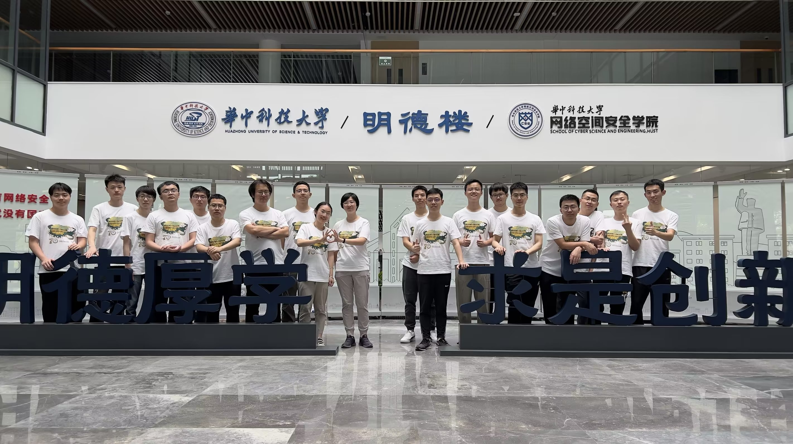
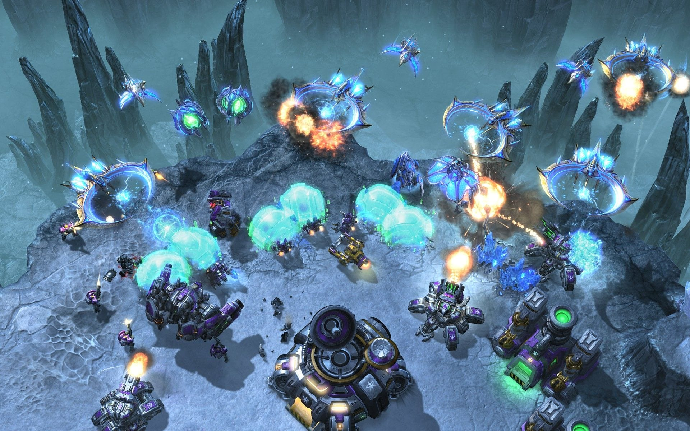
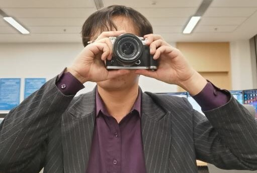

Skills
Leadership
|  | Johannes was the vice president and head of Academic Department of the flying western music association at Zhengzhou University. Johannes created and led the first non-music major string quartet group in Zhengzhou University. Johannes and his friends from string quartet finished many impressing performance in Zhengzhou University. Moreover, Johannes was charged for the teaching of music performance and theory. Johannes was also the class president and a member of the organization at Huazhong University of Science and Technology. During his three-year term of presidency. Johannes led his friends in the class 1901 to hold many exciting events, such as barbecue, outdoor atlas, dinner party and so on. Due to Johannes's outstanding performance in leadership, He was awarded the Excellent Graduate and Social Activist by HUST. |
Video Game Development & Research
|  | Like many people, Johannes is also a big fan of the video game, especially the real-time strategy game. Johannes especillay loves playing starcraft I/II, warcraft III, Command & Conquer 2, 3, 4, etc. Though Johannes loves these games, Johannes does not want to become a professional in them. Because rules of these games change frequently and it is very difficult to maintain the balance of power among different races in the game. To be a good game player is as difficult as to be a good musician or a good scientist. Johannes has no energy to achieve success in such fields. However, Johannes find it's great to do many interesting things on games. Such as developing computer games, studying the Countermeasure algorithm, developing game assistant programs, etc. Recently, Johannes is keen on implementing the state-of-art autonomous driving algorithms on the prevalent race video game - Kartrider. The codes of this study will be open source soon. |
Music Performance
 |
Johannes received violin performance diplomat and cello performance diplomat from the China Conservatory of music when he was in high school. Johannes is an excellent musician who is good at performing and composing. Till now, he has published dozens of composition works. Recent years. Johannes actively participates in various music activities. Such as the HUST 2019 New year Concert, and 6th national college student art exhibition held in 2021. Moreover, Johannes accumulated inspiration in daily life and create composition works actively. Johanens is not a full-time musician. He is now a PHD student of UIOWA majoring in Computer Science. Because scientific research occupies most of his time, he can only engage in music activities on weekends, so he named his website weekend composer. |
Photography
|  | Johannes has many hobbies. In addition to music, one of Johannes's proud hobbies is photography. Johannes enjoys capturing impressing moments of his life. If possible, Johannes wants to travel around the world, walking through the dangerous zones where war exited and enjoy the great interests of the nature. Johannes did not record photos when he was young, because Johannes held belief that the life should be felt with heart but to be recorded by machine. Recent years, Johannes abandoned such belief, because the great changes in life made Johannes often feels nostalgic for his past life. So, Johanens will bring his camera to capture the impressing moments when he has a chance to get rid of his busy research works. |